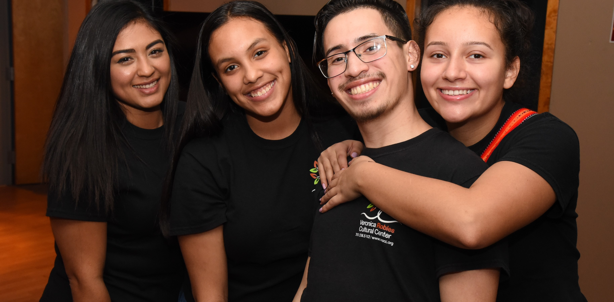
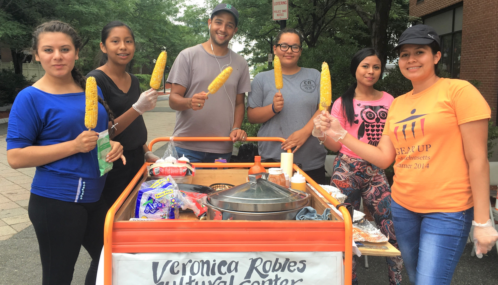

Veronica Robles Cultural Center
First text

Strong mask
Secondary text

Dancing Elotes
Third text
First text
Secondary text
Third text
VROCC was founded in 2013 as a non-profit, and formed it’s board of directors in 2017. As a Latin American cultural center, we seek to both hold space for Latinos to engage in cultural activities, and share space with people from other cultural groups, who wish to learn about our culture. All are welcome to participate in our programs and celebrate with us at our festive events. Through our cultural programs, we elevate the image of immigrant communities in Boston. We serve community members, families, college students, and groups interested in fostering, sharing, and celebrating Latino cultures.
Veronica Robles is a woman of courage and principles. As a cancer survivor, she lives her life to the fullest, filled with joy, passion, and love. Her work honors the memory of her only daughter Kithizia who passed away as a teenager. Kithzia was a beautiful dancer and loved her culture. Through her parents community work she also learned to love and celebrate the cultures of other countries. To cope with the immense pain and sadness that haunts her every day, Robles and her husband decided to open Veronica Robles Cultural Center (VROCC) a non profit organization in East Boston to teach the values of love and respect. Veronica Robles is a Mariachi singer by trade, but has become a cultural icon for Latinos in Boston. She has effectively utilized the power of arts and culture to bring the community together by raising awareness on the importance of diversity and she has empowered youth by employing them and teaching them about their roots and culture. Robles is Co-founder and Director of the Veronica Robles Cultural Center, a non-profit organization that supports community action and economic growth in East Boston, offering Latin American arts and culture programs while also providing jobs for youth. “Let’s take advantage of the blessing of having a place where we can pass on our traditions to children and youth around dance, singing, food, and art to show the beauty of Latin American countries, but most importantly let’s promote respect, raise awareness for diversity, spread love, inspire peace and create beautiful and collective memories that will last a lifetime. Life is priceless and material things have no value compared to these.” Veronica Robles
More InformationEach year at VROCC, we have various events such as dancing elotes, EL DÍA DE LOS MUERTOS, and numerous other events, to honor our Latin heritage.
Dancing Elotes
Dancing Elotes provides jobs to the youth, and brings art, culinary traditions, and traditional dances to the East Boston Farmers Market every Wednesday. This project allows VROCC to reach a broad spectrum of people, as it supports artists and partners with other community organizations.
EL DÍA DE LOS MUERTOS Car Parade & Virtual Festival
This is a thoughtful celebration honoring our ancestors and departed loved ones. Veronica Robles Cultural Center (VROCC) hosted its 7th annual “Día de los muertos” celebration, which paid homage to COVID-19 victims and honoring essential workers.

Performances
Each year VROCC performs some of our most historical dances.
At VROCC we offer a variety of dance and musical classes to pay homage to our Latin culture.
Classes